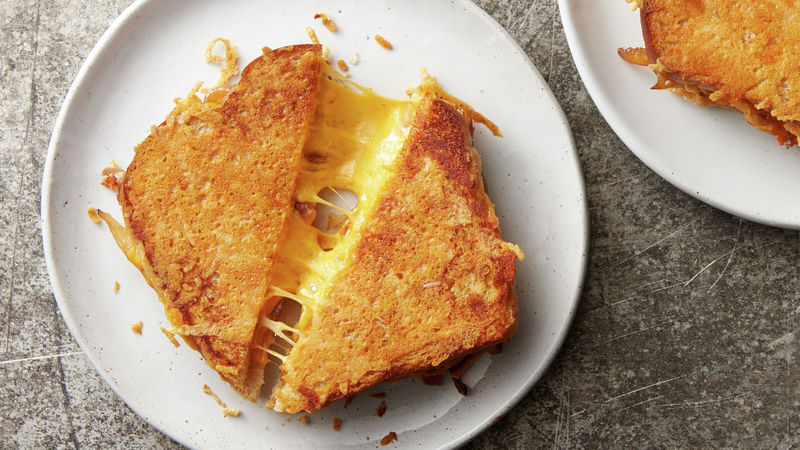

Grilled Cheese

Description
Enjoy this cheesey, buttery grilled cheese in just a couple of minutes!
Guaranteed to hit that cheesey spot! Delicious!
Ingredients
- 2 Slices of Bread
- 2tbps Butter
- Cheddar Cheese (quantity optional)
- Chives (optional)
Steps
- Grate the cheese if ungrated.
- Heat a saucepan on a medium temperature.
- Place the butter into the saucepan and leave until melted.
- Place one slice of bread into the pan.
- Layer the grated cheese onto the slice of bread.
- Place the other slice of bread on top of the cheese, making a sandwich.
- After a few minutes, flip over and press down with a spatula.
- Once the cheese has melted and both sides are brown, serve! Bon appetit!
Click here to return to the recipes list!